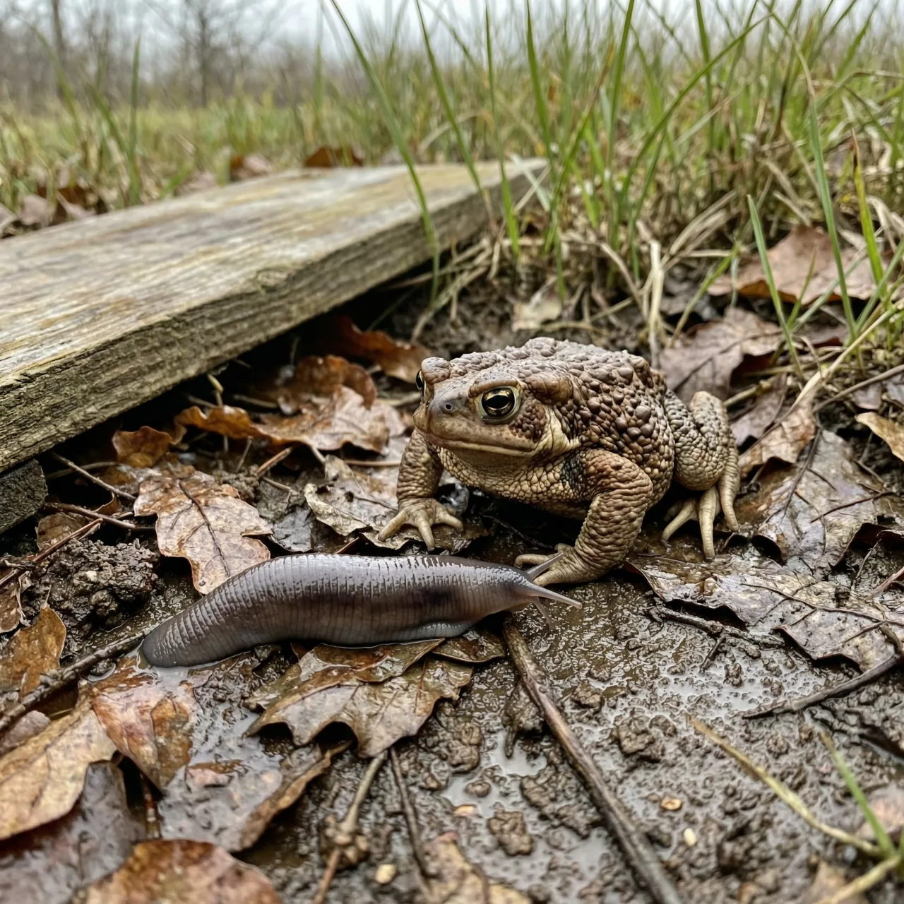
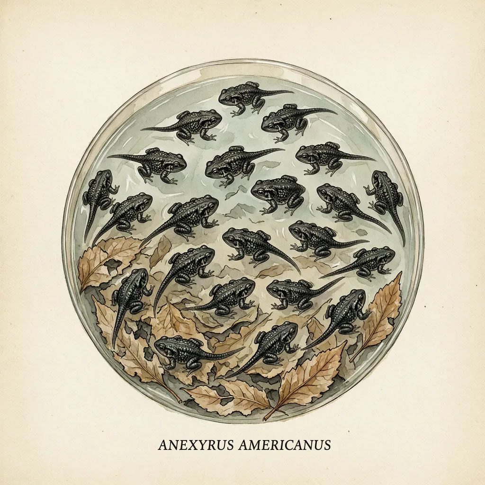

美国蟾蜍是北美东部和加拿大最常见的蟾蜍之一，体长5-9厘米，只要有半永久淡水、密林遮护和足够的食物，花园农地都能住。它和几乎同貌的福勒蟾蜍靠腹部斑点与头顶的棱区分；它的蝌蚪还会游进鱼到不了的浅水聚成一团，并分泌让鱼记住教训的毒素。
北美东部随便一块花园或农地，都可能蹲着美国蟾蜍。它对住所的要求能压缩成三条：一处半永久的淡水供蝌蚪发育，一片密林作掩护，加上够吃的虫蚁。这三条凑齐，门廊下、木板人行道下、石头底下它都住得安心，冬天再自己挖个洞藏起来冬眠。麻烦的是人怎么认出它——同域还有福勒蟾蜍，两者要用腹部的斑点、头顶的棱是否接触腮腺来分辨，每个疣上的一簇刚毛也是凭据。
美国蟾蜍一次产下两串卵，3-13日就孵化，刚出膜的蝌蚪尾巴相对身体很细。危险主要来自水里的鱼，蝌蚪的应对是游到非常浅的水区，浅到鱼进不来，并且聚成一团。它们还分泌有毒物质，有说法称鱼吃下蝌蚪会死亡，此后鱼便学懂避开这些蝌蚪。生长30-40日，蝌蚪变成小蟾蜍，在水里停留短短一阵，随后转为陆地生活。
还有一件事读者大概率不知道：美国蟾蜍的蝌蚪与绿梭藻共生，藻能帮助蝌蚪更快成长。靠着藻类、浅水和一身毒素，蝌蚪熬过30-40日，蜕成小蟾蜍爬上岸。此后它们在落叶和石头间捕食蛞蝓、蚂蚁、蚯蚓和蜘蛛，天冷就钻回土里，等下一个春天再去塘边产下两串卵。
